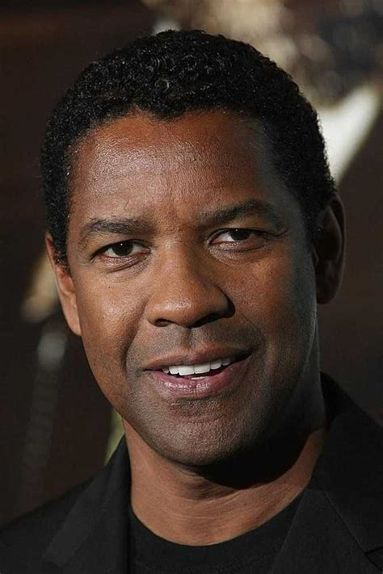
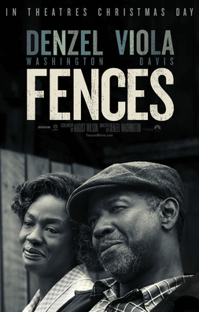

|

|
Fences is a 2016 American period drama film starring,
produced and directed by Denzel Washington and written by August Wilson,
based on his Pulitzer Prize-winning 1985 play of the same name.
Wilson was in Pittsburgh,
Pennsylvania, and originally wanted to pursue being a poet, but later
found passion for being a playwright.
In addition to Washington,
the film also stars Viola Davis,
Stephen McKinley Henderson, Jovan Adepo,
Russell Hornsby, Mykelti Williamson, and Saniyya Sidney.
Principal photography took place from April 25 to June 14,
2016, in the Hill District of Pittsburgh, Pennsylvania.
|

|